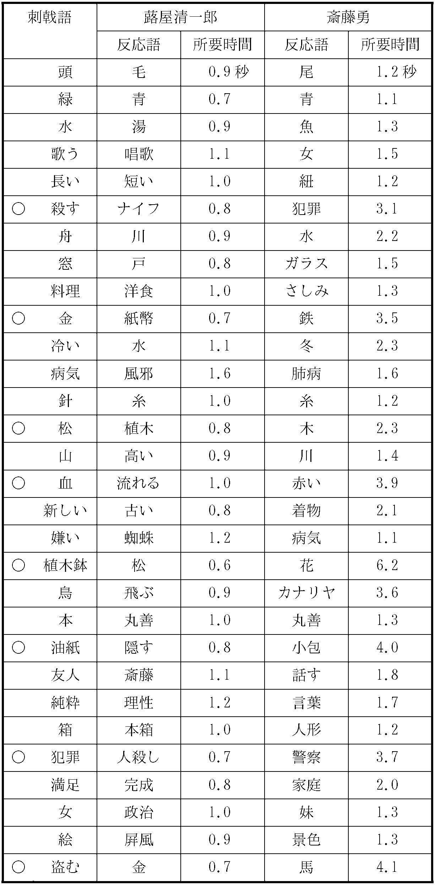

ある時、彼はふとしたことから、同級生の
斎藤は、一年ばかり前から、山の手のある淋しい
蕗屋はこの金に誘惑を感じたのだ。あのおいぼれが、そんな大金を持っているということに何の価値がある。それを俺の様な未来のある青年の学資に使用するのは、極めて合理的なことではないか。簡単に
「君、あの婆さんにしては感心な思いつきだよ、大抵、縁の下とか、天井裏とか、金の隠し場所なんて
その時、斎藤はこう云って面白そうに笑った。
それ以来、蕗屋の考は少しずつ具体的になって行った。老婆の金を自分の学資に振替える径路の一つ一つについて、あらゆる可能性を勘定に入れた上、最も安全な方法を考え出そうとした。それは予想以上に困難な仕事だった。これに比べれば、どんな複雑な数学の問題だって、なんでもなかった。彼は先にも云った様に、その考を
難点は、云うまでもなく、
老婆は滅多に外出しなかった。終日黙々として奥の座敷に丸くなっていた。たまに外出することがあっても、留守中は、田舎者の女中が彼女の命を受けて正直に見張番を勤めた。蕗屋のあらゆる苦心にも拘らず、老婆の用心には少しの隙もなかった。老婆と斎藤のいない時を見はからって、この女中を
どうしても老婆をやっつける
殺人は、一見、単なる窃盗よりは幾層倍も危険な仕事の様に見える。だが、それは一種の錯覚に過ぎないのだ。成程、発覚することを予想してやる仕事なれば殺人はあらゆる犯罪の中で最も危険に相違ない。併し、若し犯罪の軽重よりも、発覚の
では、老婆をやっつけるとして、それには果して危険がないか。この問題にぶッつかってから、蕗屋は数ヶ月の間考え通した。その長い間に、彼がどんな風に考を育てて行ったか。それは物語が進むに随って、読者に分ることだから、ここに省くが、兎も角、彼は、到底普通人の考え及ぶことも出来ない程、
今はただ、時機の来るのを待つばかりだった。が、それは案外早く来た。ある日、斎藤は学校関係のことで、女中は使に出されて、二人共夕方まで決して帰宅しないことが確められた。それは丁度蕗屋が最後の準備行為を終った日から二日目だった。その最後の準備行為というのは（これ丈けは前以て説明して置く必要がある）
さて、
併し目的の家の前に立った時だけは、
座が定まると間もなく、「あいにく女中が居りませんので」と断りながら、老婆はお茶を
老婆の息が絶えたのを見定めると、彼は死骸をそこへ横にして、一寸気になる様子で、その屏風の破れを眺めた。併しよく考えて見れば、少しも心配することはない。こんなものが何の証拠になる筈もないのだ。そこで、彼は目的の床の間へ行って、例の松の木の根元を持って、土もろともスッポリと植木鉢から引抜いた。予期した通り、その底には油紙で包んだものが入れてあった。彼は落ちつきはらって、その包みを解いて、右のポケットから一つの新しい大型の財布を取出し、紙幣を半分ばかり（十分五千円はあった）その中に入れると、財布を元のポケットに納め、残った紙幣は油紙に包んで前の通りに植木鉢の底へ隠した。無論、これは金を盗んだという証跡を
それから、彼はそこにあった座蒲団を丸めて老婆の胸にあてがい（これは血潮の飛ばぬ用心だ）左のポケットから一挺のジャックナイフを取出して歯を開くと、心臓をめがけてグサッと突差し、グイと一つ
ここで一寸、彼が紙幣を入れた財布と今のジャックナイフについて説明して置かねばならぬ。彼は、それらを、この目的丈けに使う為に、ある縁日の露店で買求めたのだ。彼はその縁日の最も賑う時分を見計らって、最も客の込んでいる店を選び、正札通りの小銭を投出して、品物を取ると、商人は勿論、沢山の客達も、彼の顔を記憶する暇がなかった程、非常に素早く姿を
さて、蕗屋は、十分注意して少しも手掛りが残っていないのを確めた後、襖のしまりも忘れないでゆっくりと玄関へ出て来た。彼はそこで靴の紐を締めながら、足跡のことを考えて見た。だが、その点は更らに心配がなかった。玄関の土間は堅い
その一劃はどの通りも淋しい屋敷町だった。老婆の家から四五町隔った所に、何かの
帰りがけに、彼は警察署へ立寄った。そして、
「今し方、この財布を拾ったのです。大分沢山入っている様ですから、お届けします」
と云い
「まさか、自分の盗んだ品物を警察へ届ける奴があろうとは、ほんとうにお
彼は笑いをかみ殺しながら、心の中で呟いた。
翌日、蕗屋は、下宿の一室で、常と変らぬ安眠から目覚めると、
「俺は斎藤の最も親しい友達なのだから、ここで警察へ出頭して、色々問い
蕗屋は早速着物を着換えると、
蕗屋は次の様に想像した。
昨日、斎藤は女中よりも先に家に帰った。それは蕗屋が目的を果して立去ると間もなくだった。そして、当然老婆の死骸を発見した。併し、直ちに警察に届ける前に、彼はあることを思いついたに相違ない。というのは、例の植木鉢だ。若しこれが盗賊の仕業なれば、或はあの中の金がなくなってはいはしないか。多分それは一寸した好奇心からだったろう。彼はそこを検べて見た。ところが、案外にも金の
「だが待てよ。斎藤は一体どういう風に弁解するだろう。次第によっては危険なことになりはしないかな」蕗屋はそれを色々と考えて見た。彼は金を見つけられた時、「自分のだ」と答えたかも知れない。なる程老婆の財産の
併し、これらは皆、蕗屋がこの計画を立てる前に予め勘定に入れて置いたことばかりだった。そして、どんなに考えても、斎藤の口からそれ以上彼にとって不利な事実が引出されようとは考えられなかった。
蕗屋は警察から帰ると、遅れた朝食を
さて読者諸君、探偵小説というものの性質に
この事件を担当した予審判事は、有名な
ところが、取調を進めるに随って、事件の困難なことが段々分って来た。警察署等は単純に斎藤勇の有罪を主張した。笠森判事とても、その主張に一理あることを認めないではなかった。というのは生前老婆の家に出入りした形跡のある者は、彼女の債務者であろうが、借家人であろうが、単なる知合であろうが、残らず召喚して綿密に取調べたにも拘らず、一人として疑わしい者はないのだ。蕗屋清一郎も勿論その内の一人だった。外に嫌疑者が現れぬ以上、さしずめ最も疑うべき斎藤勇を犯人と判断する外はない。のみならず、斎藤にとって最も不利だったのは、彼が生来気の弱い質で、一も二もなく法廷の空気に恐れをなして了って、
こうして、事件から一ヶ月が経過した。予審はまだ終結しない。判事は少しあせり出していた。丁度その時、老婆殺しの管轄の警察署長から、彼の所へ一つの耳よりな報告が
困り抜いていた笠森判事は、この報告を受取って、一道の光明を認めた様に思った。早速蕗屋清一郎召喚の手続が取り運ばれた。ところが、蕗屋を訊問した結果は、判事の意気込みにも拘らず、大して得る所もない様に見えた。何故、事件の当時取調べた際、その大金拾得の事実を申立てなかったかという訊問に対して、彼は、それが殺人事件に関係があるとは思わなかったからだと答えた。この答弁には十分理由があった。老婆の財産は斎藤の腹巻の中から発見されたのだから、それ以外の金が、殊に往来に遺失されていた金が、老婆の財産の一部だと誰れが想像しよう。
併し、これが偶然であろうか。事件の当日、現場から余り遠くない所で、しかも第一の嫌疑者の親友である男が（斎藤の申立によれば彼は植木鉢の隠し場所をも知っていたのだ）この大金を拾得したというのが、これが果して偶然であろうか。判事はそこに何かの意味を発見しようとして悶えた。判事の最も残念に思ったのは、老婆が
「どんな小さなことでも、何か一つ確かな手掛りを掴みさえすればなあ」判事は全才能を傾けて考えた。現場の取調べも幾度となく繰返された。老婆の親族関係も十分調査した。併し何の得る所もない。そうして又半月ばかり
たった一つの可能性は、と判事が考えた。蕗屋が老婆の貯金を半分盗んで、残りを元通りに隠して置き、盗んだ金を財布に入れて、往来で拾った様に見せかけたと推定することだ。だが、そんな馬鹿なことがあり得るだろうか。その財布も無論検べて見たけれど、これという手掛りもない。それに、蕗屋は平気で、当日散歩のみちすがら、老婆の家の前を通ったと申立てているではないか。犯人にこんな大胆なことが云えるものだろうか。第一、最も大切な兇器の行方が分らぬ。蕗屋の下宿の家宅捜索の結果は、何物をも
そこには確証というものが一つもなかった。署長等の云う様に、斎藤を疑えば斎藤らしくもある。だが又、蕗屋とても疑って疑えぬことはない。ただ、分っているのは、この一ヶ月半のあらゆる捜索の結果、彼等二人を除いては、一人の嫌疑者も存在しないということだった。万策尽きた笠森判事は愈々奥の手を出す時だと思った。彼は二人の嫌疑者に対して、彼の従来屡々成功した心理試験を施そうと決心した。
蕗屋清一郎は、事件の二三日後に第一回目の召喚を受けた際、係りの予審判事が有名な素人心理学者の笠森氏だということを知った。そして、当時
この大打撃に、最早や平気を装って通学を続ける余裕を失った彼は、病気と称して下宿の一室にとじ籠った。そして、ただ、如何にしてこの難関を切抜けるべきかを考えた。丁度、殺人を実行する以前にやったと同じ、或はそれ以上の、綿密と熱心を以て考え続けた。
笠森判事は果してどの様な心理試験を行うであろうか。それは到底予知することが出来ない。で、蕗屋は知っている限りの方法を思出して、その一つ一つについて、何とか対策がないものかと考えて見た。併し、元来心理試験というものが、虚偽の申立をあばく為に出来ているのだから、それを更らに偽るということは、理論上不可能らしくもあった。
蕗屋の考によれば、心理試験はその性質によって二つに大別することが出来た。一つは純然たる生理上の反応によるもの、今一つは言葉を通じて行われるものだ。前者は、試験者が犯罪に関聯した様々の質問を発して、被験者の身体上の微細な反応を、適当な装置によって記録し、普通の訊問によっては、到底知ることの出来ない真実を掴もうとする方法だ。それは、人間は、仮令言葉の上で、又は顔面表情の上で嘘をついても、神経そのものの興奮は隠すことが出来ず、それが微細な肉体上の徴候として現われるものだという理論に基くので、その方法としては、
例えば、不意に「お前は老婆を殺した本人であろう」と問われた場合、彼は平気な顔で「何を証拠にそんなことをおっしゃるのです」と云い返す丈けの自信はある。だが、その時不自然に脈搏が高まったり、呼吸が早くなる様なことはないだろうか。それを防ぐことは絶対に不可能なのではあるまいか。彼は色々な場合を仮定して、心の内で実験して見た。ところが、不思議なことには、自分自身で発した訊問は、それがどんなにきわどい、不意の思付きであっても、肉体上に変化を及ぼす様には考えられなかった。無論微細な変化を計る道具がある訳ではないから、確かなことは云えぬけれど、神経の興奮そのものが感じられない以上は、その結果である肉体上の変化も起らぬ筈だった。
そうして、色々と実験や推量を続けている内に、蕗屋はふとある考にぶッつかった。それは、練習というものが心理試験の効果を妨げはしないか、云い換えれば、同じ質問に対しても、一回目よりは二回目が、二回目よりは三回目が、神経の反応が微弱になりはしないかということだった。つまり、慣れるということだ。これは他の色々の場合を考えて見ても分る通り、随分可能性がある。自分自身の訊問に対して反応がないというのも、結局はこれと同じ理窟で、訊問が発せられる以前に、已に予期がある為に相違ない。
そこで、彼は「
さて次には、言葉を通じて試験する方法だ。これとても恐れることはない。いや寧ろ、それが言葉である丈けごまかし易いというものだ。これには色々な方法があるけれど、最もよく行われるのは、あの精神分析家が病人を見る時に用いるのと同じ方法で、聯想診断という奴だ。「障子」だとか「机」だとか「インキ」だとか「ペン」だとか、なんでもない単語をいくつも順次に読み聞かせて、出来る丈け早く、少しも考えないで、それらの単語について聯想した言葉を喋らせるのだ。例えば、「障子」に対しては「窓」とか「敷居」とか「紙」とか「戸」とか色々の聯想があるだろうが、どれでも構わない、その時ふと浮んだ言葉を云わせる。そして、それらの意味のない単語の間へ、「ナイフ」だとか「血」だとか「金」だとか「財布」だとか、犯罪に関係のある単語を、気づかれぬ様に混ぜて置いて、それに対する聯想を検べるのだ。
先ず第一に、最も思慮の浅い者は、この老婆殺しの事件で云えば「植木鉢」という単語に対して、うっかり「金」と答えるかも知れない。即ち「植木鉢」の底から「金」を盗んだことが最も深く印象されているからだ。そこで彼は罪状を自白したことになる。だが、少し考え深い者だったら、仮令「金」という言葉が浮んでも、それを押し殺して、例えば「瀬戸物」と答えるだろう。
もう一つの方法は、問を発してから答を得るまでの時間を、ある装置によって精確に記録し、その遅速によって、例えば「障子」に対して「戸」と答えた時間が一秒間であったにも拘らず、「植木鉢」に対して「瀬戸物」と答えた時間が三秒間もかかったとすれば（実際はこんな単純なものではないけれど）それは「植木鉢」について最初に現れた聯想を押し殺す為に時間を取ったので、その被験者は怪しいということになるのだ。この時間の遅延は、当面の単語に現れないで、その次の意味のない単語に現れることもある。
又、犯罪当時の状況を詳しく話して聞かせて、それを
この種の試験に対しては、前の場合と同じく「練習」が必要なのは云うまでもないが、それよりももっと大切なのは、蕗屋に云わせると、無邪気なことだ。つまらない技巧を
「植木鉢」に対しては、寧ろあからさまに「金」又は「松」と答えるのが、一番安全な方法なのだ。というのは蕗屋は仮令彼が犯人でなかったとしても、判事の取調べその他によって、犯罪事実をある程度まで
彼は又、一方に於て、ある一つの有利な事情を勘定に入れていた。それを考えると、仮令、予期しない訊問に接しても、更らに一歩を進めて、予期した訊問に対して不利な反応を示しても
蕗屋は考えるに随って、段々安心して来た。何だか鼻唄でも歌い出したい様な気持になって来た。彼は今は却って、笠森判事の呼出しを待構える様にさえなった。
笠森判事の心理試験が如何様に行われたか。それに対して、神経家の斎藤がどんな反応を示したか。蕗屋が、如何に落ちつきはらって試験に応じたか。ここにそれらの
それは心理試験が行われた翌日のことである。笠森判事が、自宅の書斎で、試験の結果を書きとめた書類を前にして、小首を傾けている所へ、
「Ｄ坂の殺人事件」を読んだ人は、この明智小五郎がどんな男だかということを、幾分御存じであろう。彼はその後、屡々困難な犯罪事件に関係して、その珍らしい才能を
女中の案内につれて、判事の書斎に、明智のニコニコした顔が現れた。このお話は「Ｄ坂の殺人事件」から数年後のことで、彼ももう昔の書生ではなくなっていた。
「
明智は判事の机の上を覗きながら云った。
「イヤ、どうも、今度はまったく弱りましたよ」
判事が、来客の方に身体の向きを換えながら応じた。
「例の老婆殺しの事件ですね。どうでした、心理試験の結果は」
明智は、事件以来、度々笠森判事に逢って詳しい事情を聞いていたのだ。
「イヤ、結果は明白ですがね」と判事「それがどうも、僕には何だか得心出来ないのですよ。昨日は脈搏の試験と聯想診断をやって見たのですが、蕗屋の方は殆ど反応がないのです。尤も脈搏では、大分疑わしい所もありましたが、併し、斎藤に比べれば、問題にもならぬ位僅かなんです。これを御覧なさい。ここに質問事項と、脈搏の記録がありますよ。斎藤の方は実に
判事が示した聯想診断の記録は左の様に記されていた。

○印は犯罪に関係ある単語。実際は百位使われるし、更にそれを二組も三組も用意して、次々と試験するのだが、右の表は解り易くする為めに簡単にしたものである。
「ね、非常に明瞭でしょう」判事は明智が記録に目を通すのを待って続けた「これで見ると、斎藤は色々故意の細工をやっている。一番よく分るのは反応時間の遅いことですが、それが問題の単語ばかりでなくその直ぐあとのや、二つ目のにまで影響しているのです。それから又、『
「そんな風にも取れますね」
明智は何か考え考え云った。併し判事は彼の意味あり気な表情には、少しも気附かないで、話を進めた。
「ところがですね。これで、もう蕗屋の方は疑う所はないのだが、斎藤が果して犯人かどうかという点になると、試験の結果はこんなにハッキリしているのに、どうも僕は確信が出来ないのですよ。何も予審で有罪にしたとて、それが最後の決定になる訳ではなし、まあこの位でいいのですが、御承知の様に僕は例のまけぬ気でね。公判で僕の考をひっくり返されるのが
「これを見ると、実に面白いですね」明智が記録を手にして始めた。「蕗屋も斎藤も
「そういう見方もありますね。聯想診断て奴は、考えれば考える丈け、色々面白い判断が出て来るものですよ」
「ところで」明智は少し口調を換えて云った。「あなたは、心理試験というものの弱点について考えられたことがありますかしら。デ・キロスは心理試験の提唱者ミュンスターベルヒの考を批評して、この方法は拷問に代るべく考案されたものだけれど、その結果は、やはり拷問と同じ様に、
「それは悪い場合を考えれば、そうでしょうがね。無論僕もそれは知ってますよ」
判事は少しいやな顔をして答えた。
「併し、その悪い場合が、存外手近かにないとも限りませんからね。こういうことは云えないでしょうか。例えば、非常に神経過敏な、無辜の男が、ある犯罪の嫌疑を受けたと仮定しますね。その男は犯罪の現場を捕えられ、犯罪事実もよく知っているのです。この場合、彼は果して心理試験に対して平気でいることが出来るでしょうか。『ア、これは俺を試すのだな、どう答えたら疑われないだろう』などという風に
「君は斎藤勇のことを云っているのですね。イヤ、それは、僕も何となくそう感じたものだから、今も云った様に、まだ迷っているのじゃありませんか」
判事は益々苦い顔をした。
「では、そういう風に、斎藤が無罪だとすれば（尤も金を盗んだ罪は免れませんけれど）一体誰が老婆を殺したのでしょう……」
判事はこの明智の言葉を中途から引取って、荒々しく尋ねた。
「そんなら、君は、
「あります」明智がニコニコしながら答えた。「僕はこの聯想試験の結果から見て蕗屋が犯人だと思うのですよ。併しまだ確実にそうだとは云えませんけれど、あの男はもう帰宅したでしょうね。どうでしょう。それとなく彼をここへ呼ぶ訳には行きませんかしら、そうすれば、僕はきっと真相をつき止めて
「なんですって。それには何か確かな証拠でもあるのですか」
判事が少なからず驚いて尋ねた。
明智は別に得意らしい色もなく、詳しく彼の考を述べた。そして、それが判事をすっかり感心させて了った。
明智の希望が
「御友人の斎藤氏は愈々有罪と決した。それについて御話したいこともあるから、私の私宅まで御足労を
これが呼出しの口上だった。蕗屋は丁度学校から帰った所で、それを聞くと早速やって来た。流石の彼もこの吉報には少なからず興奮していた。嬉しさの余り、そこに恐ろしい罠のあることを、まるで気附かなかった。
笠森判事は、一通り斎藤を有罪と決定した理由を説明したあとで、こう附加えた。
「君を疑ったりして、全く相済まんと思っているのです。今日は、実はそのお詫び
そして、蕗屋の為には紅茶を命じたりして極く打ちくつろいだ様子で雑談を始めた。明智も話に加わった。判事は、彼を知合の弁護士で、死んだ老婆の遺産相続者から、貸金の取立て等を依頼されている男だといって紹介した。無論半分は嘘だけれども親族会議の結果、老婆の
三人の間には、斎藤の噂を始めとして、色々の話題が話された。すっかり安心した蕗屋は、中でも一番雄弁な話手だった。
そうしている内に、いつの間にか時間が経って、窓の外に夕暗が迫って来た。蕗屋はふとそれに気附くと、帰り支度を始めながら云った。
「では、もう失礼しますが、別に御用はないでしょうか」
「オオ、すっかり忘れて了うところだった」明智が快活に云った。「なあに、どうでもいい様なことですがね。丁度
屏風が抵当物だったことはほんとうだが、その外の点は無論作り話に過ぎなかった。蕗屋は屏風という言葉に思わずヒヤッとした。
併しよく聞いて見ると何でもないことなので、すっかり安心した。「何をビクビクしているのだ。事件はもう落着して了ったのじゃないか」
彼はどんな風に答えてやろうかと、一寸思案したが、例によってありのままにやるのが一番いい方法の様に考えられた。
「判事さんはよく御承知ですが、僕はあの部屋へ入ったのはたった一度切りなんです。それも、事件の二日前にね」
彼はニヤニヤ笑いながら云った。こうした云い方をするのが愉快でたまらないのだ。
「併し、その屏風なら覚えてますよ。僕の見た時には確か傷なんかありませんでした」
「そうですか。間違いないでしょうね。あの小野の小町の顔の所に、ほんの一寸した傷がある丈けなんですが」
「そうそう、思出しましたよ」蕗屋は如何にも今思出した風を装って云った。
「あれは六歌仙の絵でしたね。小野の小町も覚えてますよ。併し、もしその時傷がついていたとすれば、見落した筈がありません。だって、極彩色の小町の顔に傷があれば、一目で分りますからね」
「じゃ御迷惑でも、証言をして頂く訳には行きませんかしら、屏風の持主というのが、実に慾の深い奴で始末にいけないのですよ」
「エエ、よござんすとも、いつでも御都合のいい時に」
蕗屋はいささか得意になって、弁護士と信ずる男の頼みを承諾した。
「ありがとう」明智はモジャモジャに延ばした頭を指でかき廻しながら、嬉し相に云った。これは、彼が多少亢奮した際にやる一種の癖なのだ。「実は、僕は最初から、あなたが屏風のことを知って居られるに相違ないと思ったのですよ。というのはね、この昨日の心理試験の記録の中で『絵』という問に対して、あなたは『屏風』という特別の答え方をしていますね。これですよ。下宿屋にはあんまり屏風なんて備えてありませんし、あなたは斎藤の外には別段親しいお友達もない様ですから、これはさしずめ老婆の座敷の屏風が、何かの理由で特別に深い印象になって残っていたのだろうと想像したのですよ」
蕗屋は一寸驚いた。それは確かにこの弁護士のいう通りに相違なかった。でも、彼は昨日どうして屏風なんてことを口走ったのだろう。そして、不思議にも今までまるでそれに気附かないとは、これは危険じゃないかな。併し、どういう点が危険なのだろう。あの時彼は、その傷跡をよく検べて、何の手掛りにもならぬことを確めて置いたではないか。なあに、平気だ平気だ。彼は一応考えて見てやっと安心した。
ところが、ほんとうは、彼は明白すぎる程明白な大間違をやっていたことを少しも気がつかなかったのだ。
「なる程、僕はちっとも気附きませんでしたけれど、確かにおっしゃる通りですよ。却々鋭い御観察ですね」
蕗屋は、あくまで無技巧主義を忘れないで平然として答えた。
「なあに、偶然気附いたのですよ」弁護士を装った明智が
蕗屋は非常な不安を感じ始めた。この弁護士は、一体何の為にこんな饒舌を弄しているのだろう。
好意でかそれとも悪意でか。何か深い下心があるのじゃないかしら。彼は全力を傾けて、その意味を悟ろうとした。
「『植木鉢』にしろ『油紙』にしろ『犯罪』にしろ、その外、問題の八つの単語は、皆、決して『頭』だとか『緑』だとかいう平凡なものよりも聯想し易いとは考えられません。それにも拘らず、あなたは、その難しい聯想の方を却って早く答えているのです。これはどういう意味でしょう。僕が気づいた点というのはここですよ。一つ、あなたの心持を当てて見ましょうか、エ、どうです。何も一興ですからね。併し若し間違っていたら御免下さいよ」
蕗屋はブルッと身震いした。併し、何がそうさせたかは彼自身にも分らなかった。
「あなたは、心理試験の危険なことをよく知っていて、予め準備していたのでしょう。犯罪に関係のある言葉について、ああ云えばこうと、ちゃんと腹案が出来ていたんでしょう。イヤ、僕は決して、あなたのやり方を非難するのではありませんよ。実際、心理試験という奴は、場合によっては非常に危険なものですからね。有罪者を逸して無辜のものを罪に陥れることがないとは断言出来ないのですからね。ところが、準備があまり行届き過ぎていて、勿論、別に早く答える積りはなかったのでしょうけれど、その言葉丈けが早くなって了ったのです。これは確かに大変な失敗でしたね。あなたは、ただもう遅れることばかり心配して、それが早過ぎるのも同じ様に危険だということを少しも気づかなかったのです。尤も、その時間の差は非常に僅かずつですから、余程注意深い観察者でないとうっかり見逃して了いますがね。兎に角、拵え事というものは、どっかに
蕗屋は話手の目をじっと見詰めていた。どういう訳か、そらすことが出来ないのだ。そして、鼻から口の辺にかけて筋肉が硬直して、笑うことも、泣くことも、驚くことも、一切の表情が不可能になった様な気がした。
無論口は利けなかった。もし無理に口を利こうとすれば、それは直ちに恐怖の叫声になったに相違ない。
「この無邪気なこと、つまり小細工を弄しないということが、あなたの
明智はとぼけた顔をして、判事に聞いた。
「犯罪事件の前日ですよ。つまり先月の四日です」
「エ、前日ですって、それは本当ですか。妙じゃありませんか、今蕗屋君は、事件の前々日即ち三日に、それをあの部屋で見たと、ハッキリ云っているじゃありませんか。どうも不合理ですね。あなた方のどちらかが間違っていないとしたら」
「蕗屋君は何か思違いをしているのでしょう」判事がニヤニヤ笑いながら云った。
「四日の夕方まではあの屏風は、そのほんとうの持主の所にあったことが、明白に判っているのです」
明智は深い興味を以て、蕗屋の表情を観察した。それは、今にも泣き出そうとする小娘の顔の様に変な風にくずれかけていた。
これが明智の最初から計画した罠だった。彼は事件の二日前には、老婆の家に屏風のなかったことを、判事から聞いて知っていたのだ。
「どうも困ったことになりましたね」明智はさも困った様な声音で云った「これはもう取返しのつかぬ大失策ですよ。なぜあなたは見もしないものを見たなどと云うのです。あなたは事件の二日前から一度もあの家へ行っていない筈じゃありませんか。殊に六歌仙の絵を覚えていたのは、致命傷ですよ。恐らくあなたは、ほんとうのことを云おう、ほんとうのことを云おうとして、つい嘘をついて了ったのでしょう。ね、そうでしょう。あなたは事件の二日前にあの座敷へ入った時、そこに屏風があるかないかという様なことを注意したでしょうか。無論注意しなかったでしょう。実際それは、あなたの計画には何の関係もなかったのですし、若し屏風があったとしても、あれは御承知の通り時代のついたくすんだ色合で、他の色々な道具類の中で殊更ら目立っていた訳でもありませんからね。で、あなたが今、事件の当日そこで見た屏風が、二日前にも同じ様にそこにあっただろうと考えたのは、ごく自然ですよ。それに僕はそう思わせる様な方法で問いかけたのですものね。これは一種の錯覚見たいなものですが、よく考えて見ると、我々には日常ザラにあることです。併し、もし普通の犯罪者だったら決してあなたの様には答えなかったでしょう。彼等は、何でもかんでも、隠しさえすればいいと思っているのですからね。ところが、僕にとって好都合だったのは、あなたが世間並みの裁判官や犯罪者より、十倍も二十倍も進んだ頭を持っていられたことです。つまり、急所にふれない限りは、出来る丈けあからさまに喋って了う方が、却って安全だという信念を持っていられたことです。裏の裏を行くやり方ですね。そこで僕は更らにその裏を行って見たのですよ。まさか、あなたはこの事件に何の関係もない弁護士が、あなたを白状させる為に、罠を作っていようとは想像しなかったでしょうね。ハハハハハ」
蕗屋は、真青になった顔の、額の所にビッショリ汗を浮かせて、じっと黙り込んでいた。彼はもうこうなったら、弁明すればする丈け、ボロを出す許りだと思った。
彼は、頭がいい丈けに、自分の失言がどんなに雄弁な自白だったかということを、よく
長い沈黙が続いた。
「聞えますか」明智が暫くしてから云った。「そら、サラサラ、サラサラという音がしているでしょう。あれはね。最前から、隣の部屋で、僕達の問答を書きとめているのですよ。……君、もうよござんすから、それをここへ持って来て呉れませんか」
すると、襖が開いて、一人の書生
「それを一度読み上げて下さい」
明智の命令に随って、その男は最初から朗読した。
「では、蕗屋君、これに署名して、拇印で結構ですから
蕗屋は、ここで署名を拒んだところで、何の甲斐もないことを、十分知っていた。彼は明智の驚くべき推理をも、併せて承認する意味で、署名捺印した。そして、今はもうすっかりあきらめ果てた人の様にうなだれていた。
「先にも申上げた通り」明智は最後に説明した。「ミュンスターベルヒは、心理試験の真の効能は、嫌疑者が、ある場所、人又は物について知っているかどうかを試す場合に限って確定的だといっています。今度の事件で云えば、蕗屋君が屏風を見たかどうかという点が、それなんです。この点を外にしては、百の心理試験も恐らく無駄でしょう。何しろ、相手が蕗屋君の様な、何もかも予想して、綿密な準備をしている男なのですからね。それからもう一つ申上げ度いのは、心理試験というものは、必ずしも、書物に書いてある通り一定の刺戟語を使い、一定の機械を用意しなければ出来ないものではなくて、今僕が実験してお目にかけた通り、極く日常的な会話によってでも、十分やれるということです。昔からの